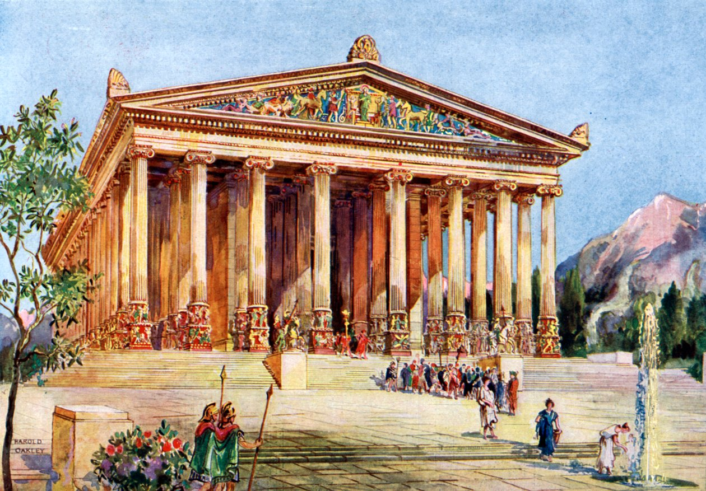

Świątynia Artemidy w Efezie - Zniszczona Przez Podpalacza
Świątynia Artemidy, poświęcona greckiej bogini łowów, była jedną z największych budowli starożytności, wielokrotnie przebudowywaną. Jej ostateczna, najsłynniejsza wersja, została zbudowana z marmuru i ozdobiona rzeźbami. Była tak piękna, że starożytni podróżnicy uznawali ją za najwspanialszy z cudów.
Została zniszczona przez szalonego podpalacza, Herostratesa, w 356 r. p.n.e., który chciał zyskać sławę (nawet za cenę zhańbienia świątyni). Pożar ten miał miejsce tej samej nocy, co narodziny Aleksandra Wielkiego.